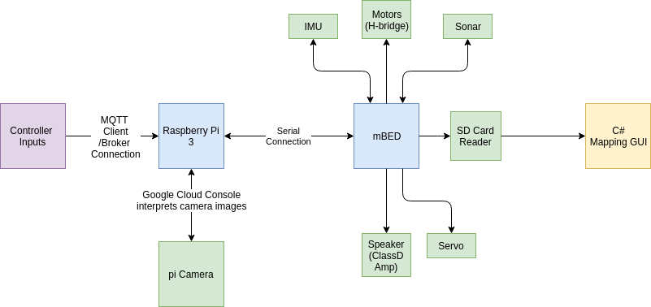

When trying to communicate from Raspberry Pi to mbed we had been trying to use the controller to write outputs to the mBed from the RPi, since it could connect to it via bluetooth. One issue we realized outright was that it was difficult to send entire strings to the mBed over a serial connection. The serial method for mbed uses a device.getc() method which only takes in one character at a time. Therefore anything longer would get truncated. So the controller would not be able to send "Right Joystick moved right" for example. We decided to dedicate each controller action to one ASCII character since there were over 52 and there were way less controller actions to be mapped.
Another issue we had was being able to lock in the heading for particular moments when initiating the tagging protocol from the controller. We needed a way to differentiate them from each other and it was decided to use a timer to start and stop on forward and turning movement. This was written to the SD card so that it could be parsed by the C# gui and plot correctly.
There were a few issues on the RPi side. The main one being that we were unable to use Open CV on it. Initially we wanted to use OpenCV to track all of our items in our environment by filtering it's color from the environment via a mask. We learned that installing OpenCV on a RPi has two issues. First one being it takes an extremely long time to do so. Second once it install it disables the initial use of the camera so it defeats the entire purpose of installing it there in the first place. Thus we deferred to using the Google Vision API and it's label request tool to identify features in the environment.
Additionally we had the controller issue for the RPi side since we were trying to use bluetooth. The controller would only stay connected for 2 milliseconds before getting kicked out. So this is why we defaulted to MQTT, which is detailed more later.
Originally we had decided to use a Dualshock Playstation 4 controller to provide the user more of an intuitive layout for controlling the robot rather than just the bluetooth app. There were a few issues with this. Since the controller was capable of bluetooth it could be easily connected to the Raspberry Pi using the bluetooth capabilities. At first this worked, but once we switched over to Raspbian for Robots it stopped functioning. The controller had to be connected in a different way so we explored using MQTT, which is a machine to machine IOT connectivitiy protocol. This would require us to make one of the devices a client and one of them the broker. Therefore we connected the controller to a personal PC running linux and subscribed to a specific topic for the controller, while connecting to the RPi via IP address over the same wifi network. The communication from PC to RPi for controller outputs was successful, but for some reason writing to the serial port of the mBed was not successful. Each controller output was mapped to a particular character, which was processed by the mbed and caused some sort of robot action. We felt that if we had a little more time we probably would have figured it out. However, in an effort to keep it wireless we switched the control scheme over to bluetooth with switch case statements.
Here is a look at the controller.
This would have been the intended control method for the entire setup.
The mapping was intended to be real-time with the robot, but the main issue was communicating with the GUI and the RPi since the GUI was in C# and the RPi code was in python. Once we moved away from making it real time we were able to not worry about writing from the RPi to the GUI instantly, but instead logging the correct data and processing it after the fact.
Outside of that we were originally planning to use the IMU, however, based on our software organization in the mbed code once we used the IMU.begin() method it locked up everything in our code. We instead devised a work around by averaging the rate of speed of a forward movement, left turn movement, and right turn movement. We set these a predetermined values, so that when the timer was used, the value could be multiplied by this rate and the amount of distance traveled could be found. This would then be processed by the GUI. Unfortunately this was not entirely accurate, so a compounded error even after scaling caused the generated plot to be off. Possible solutions that were recommended were using a new IMU chip that contained its on internal ARM processor this way that process can be offloaded from the mbed.